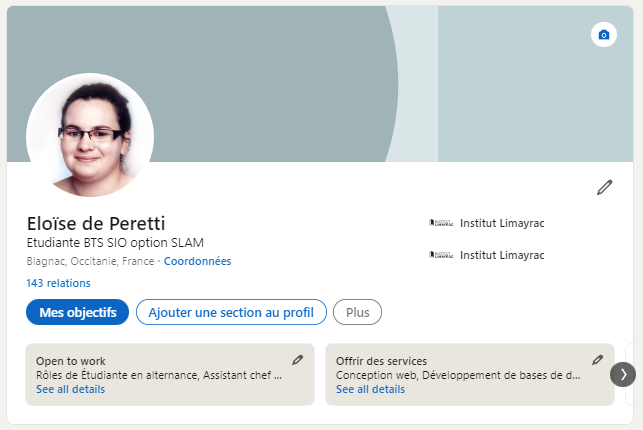
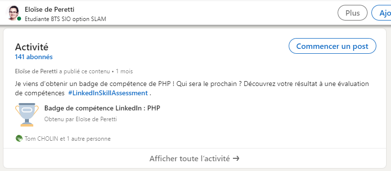
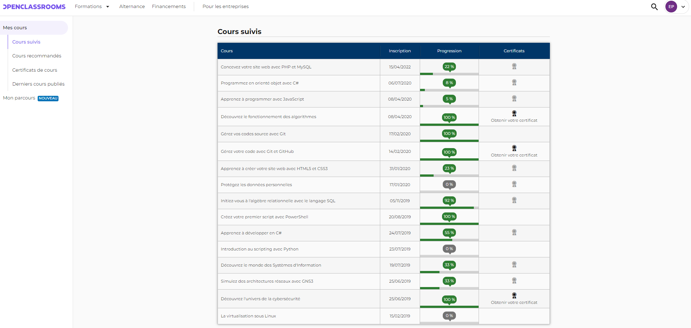
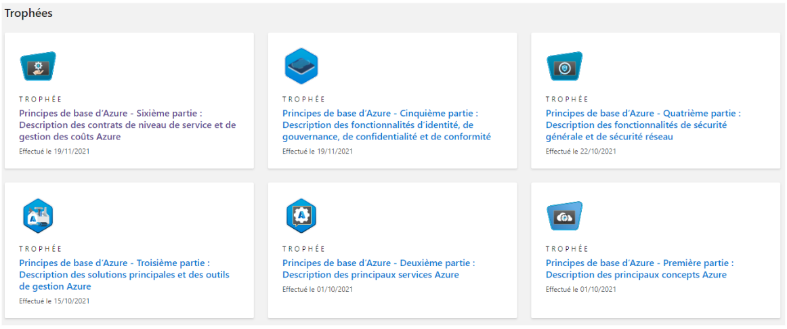

Revenir à l'acceuil
Gérer le patrimoine informatique
Répondre aux incidents et aux demandes d'assistance et d'évolution
Développer la présence en ligne de l'organisation
Travailler en mode projet
Mettre à disposition des utilisateurs un service informatique
Portfolio Eloïse de Peretti SIO2 option SLAM
Organiser son développement professionnel
Profil LinkedIn

Curriculum Vitae
Se former en continu
 
Parcours de certification
